No dia 22 de Março deste ano, a Wizards of the Coast pegou muita gente de surpresa e anunciou um novo formato baseado em Commander: o Brawl. É nada mais, nada menos que um Commander compacto, tem as mesmas regras, as únicas diferenças são o número total de cards no deck e apenas cartas no formato Standard podem ser jogadas.
Para saber mais sobre este novo formato, você pode ver nosso post falando sobre aqui.
Escolhendo o seu Comandante
Já que o nosso ponto neste tema são os dinossauros, nós temos dois possíveis comandantes para construir o deck em volta: Gishath, Avatar do Sol e Zacama, Calamidade Primordial. Nós temos vários outros dinossauros lendários no Standard para jogarmos de comandante também, como Ghalta, Zetalpa e Etali, porém assim como no formato Commander. poderemos jogar apenas cards das cores respectivas dos nossos comandantes, limitando bastante nossas opções em apenas uma cor. Devido a isto, recomendamos você ir para o Naya (verde, vermelho e branco).
A escolha do comandante dependerá do estilo de jogo que queremos jogar. Gishath faz com que o deck seja mais tribal aos dinossauros, tendo que colocar muitos deles como criaturas, já que a habilidade do comandante é colocar dinossauros de graça no campo de batalha. Por outro lado, Zacama deixa o seu jogo mais flexível, você não precisa ficar preso aos dinossauros e pode colocar qualquer criatura das cores verde, vermelha e braca. Porém nos dois cenário,s uma coisa permanece: voc~e precisa ter um bom ramp para jogá-los. Gishath custa 8 de mana e Zacama 9, é um valor altíssimo para conjurá-los.
Rampe como se não houvesse amanhã
 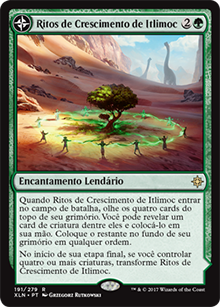
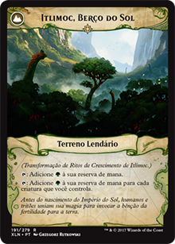
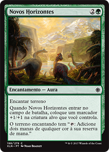
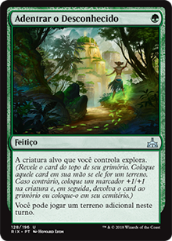
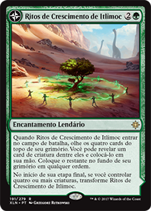
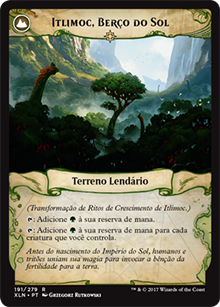
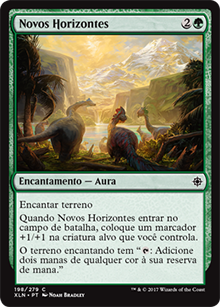
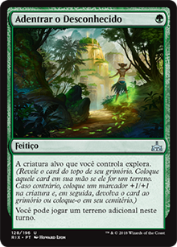
 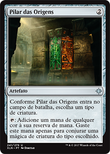
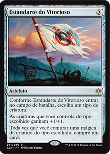
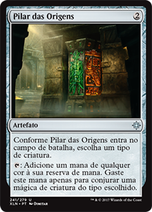
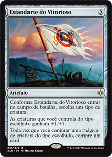
Ramp, Forest! Ramp! Nossos comandantes são bastante caros, então teremos que rampar muito. Escolha vários cards que geram manas adicionais, acelere o processo de terrenos no campo de batalha, procurando por terrenos, etc. Acima temos opções que fazem nosso ramp mais fácil no Standard para conjurarmos nossos queridos comandantes e suas tropas o mais rápido que pudermos. Not que a habilidade "explorar" às vezes não nos dará terrenos, porém acelera o processo de conseguirmos um, já que não puxamos no draw da habilidade.
 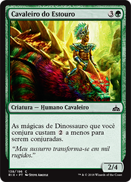
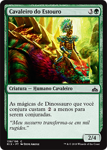

 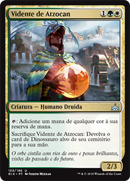
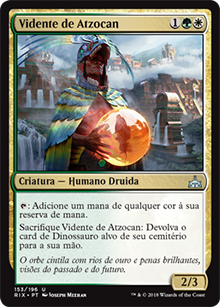
Além disso, criatuas como Gladiodonte Descontrolado aceleram nosso processo de terrenos no campo de batalha, e os Raptores Andarilhos nos dão terrenos toda vez que sofrem dano. Temos opções para redução de custo dos dinossauros também: Estandarte do Vitorioso e várias criaturas como Convocadora de Kinjalli, Mestre de Caça de Otepec, Cavaleiro do Estouro, e assim vai. Estes cards são mandatórios em qualquer deck que tenha dinossauros como comandantes.
Era dos Dinossauros: Criaturas
Agorá, nós temos dois caminhos a seguir: criaturas com o Gishath e criaturas com o Zacama. Já que nosso foco são os dinossauros, vamos falar sobre as criaturas com o Gishath na torre de comando. Com o Zacama, você pode jogar qualquer criatura que desejar nas cores Naya.
Selecionamos os melhores dinossauros (em nossa opinião) separados por cores. Vamos dar uma olhada neles.
 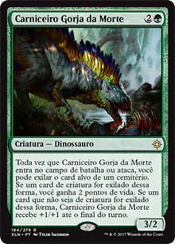
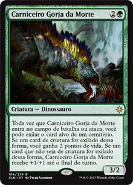
 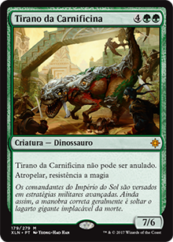
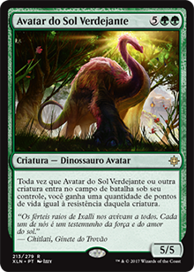
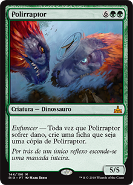
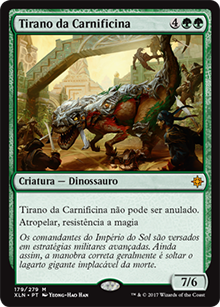
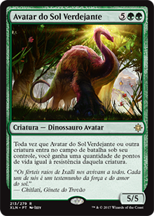
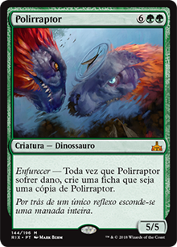

Aqui estão os nossos dinossauros verdes. Eles são os nossos dinossauros mais fortes, começando pelos Raptores Andarilhos. Eles são essenciais neste deck, devido ao gerenciamento de 3 cores, você pode procurar pelos terrenos que precisa todas as vezes que eles levarem dano. Brontodonte Destruidor é bom em qualquer situação, um corpo 3/4 por 1GG de custo, e sua habilidade é muito boa, quase todo mundo utiliza artefatos ou encantamentos. Carniceiro Gorja-de-Morte é muito agressivo no início das partidas, além de que ele exila cards dos cemitérios, auxiliando contra decks como "O Deus-Escaravelho". Raptor Maxilácero é um corpo 4/5 que custa apenas 2GG, e sua habilidade é muito boa, comprar cards do grimório é algo bem importante na modalidade Commander ou Standard. Tirano da Carnificina é uma máquina com atropelar, e seus oponentes não podem anulá-lo ou fazê-lo alvo de mágicas ou habilidades para remoção, sendo muito difícil de ser retirado de jogo. Avatar do Sol Verdejante nos dá pontos de vida para resistirmos mais, e Ghalta, Fome Primordial é bom em qualquer situação, você pode baixá-lo praticamente de graça em vários cenários e ele é somente 12/12 com atropelar. Agora, nós temos o Polirraptor neste deck devido a um combo muito legal: Pioneiro do Império.
Jogando o Pioneiro do Império e procurando pelo Polirraptor, assim que ele entrar em jogo, o Pioneiro causará 1 ponto de dano a todas as criaturas do campo de batalha, incluindo o Polirraptor, então ele irá gerar uma ficha que é uma cópia dele, e assim que a ficha que é uma cópia dele entrar no campo de batalha, o Pioneiro causará dano a todo mundo de novo, até ele não aguentar e morrer (ele é 1/3, então ele causará dano 3x). No final, você terá vários Polirraptors no campo de batalha e poderá ter limpado as criaturas de seus oponentes.
 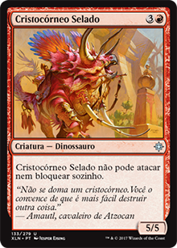
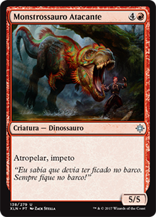
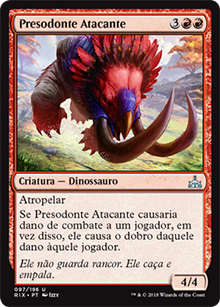
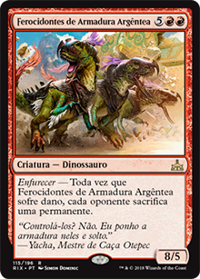
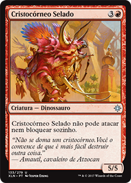
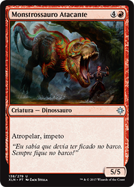
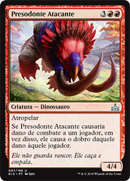
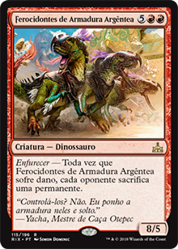

Nos dinossauros vermelhos, temos opções muito boas. Cria de Raptor é bom no início do jogo e bloqueia muito bem. Cospe-morte Franjado pode ser bom se você tiver Exasperar, Tiro Duplo ou outras mágicas que dão 1 de dano a ele. Bando de Raptores sempre serão 5/3 atropelando, já que o deck é de dinossauros. Cristocórneo Selado tem um bom custo de mana para o seu corpo. Monstrossauro Atacante e Presodonte Atacante são bastante fortes, e podem entrar no campo de batalha bem antes devido a cards de ramp/redução de custo. Ferocidontes de Armadura Argêntea são bastante fortes e você pode dar dano neles várias vezes, fazendo seus oponentes sacrificarem várias permanentes. Mas a mina de ouro na cor vermelha é o Etali. Ele é mais forte do que aparenta ser. Já me salvou muitas vezes, você pode conjurar cards do topo do seu grimório e do grimório de seus oponentes toda vez que ele ataca. Mais uma vez, muito forte.

A cor branca não é tão forte quanto a vermelha e verde para os dinossauros, mas ela nos oferece algumas opções bastante fortes, e ela possui os únicos dinossauros que voam (uma das fraquezas do deck). Malhocéfalo Territorial e Asa-solar de Kinjalli podem causar dores de cabeça em seus oponentes abrindo caminho das criaturas bloqueadores para dar dano diretamente aos pontos de vida. Aerossauro Imperial e Helióptero Majéstico são boas opções para nossos comandantes ou outros dinossauros ganharem "voar", ficando mais difíceis de serem bloqueados. Altissauro do Templo previne nossos dinossauros de morrerem e funciona muito bem com o Tirano Armandíbula. Cerátopo Estripador dá golpe duplo toda vez que ataca para todas as nossas outras criaturas (incluindo o comandante). Zetalpa é tão forte que é um card que funciona só, bastante independente. Basta olhar para o que ele faz, é MUITO forte e difícil de remover.
 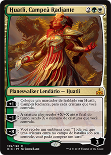
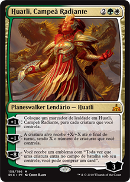

Nos cards multicoloridos, temos boas opções para começar a partida. Cerátopo Chifre-de-cerco, Terror dos Céus e Raptor Implacável são cards bastante agressivos no início, e você pode desencadear o efeito de enfurecer do Cerátopo de várias maneiras, como por exemplo usando um Exasperar, Tiro Duplo, Abalar as Fundações, um Gladiodonte Enfurecido entrando no campo de batalha, ou atacando com um Regissauro Enfurecido, eke urpa crescer cada vez mais rápido e se tornar um problema para os adversários. Um card que merece uma atenção especial é o Regissauro Alfa. É obrigatório em qualquer deck de dinossauro, seja Standard, Commander, Brawl, Modern. Ele dá ímpeto para todos os outros dinossauros.
E os Planeswalkers? Bem, ela não é um dinossauro, porém ela os doma! Huatli é o nosso planeswalker, e você irá achá-la em 3 formas, porém apenas duas são boas para nossa atenção: Huatli, Poetisa Guerreira e Huatli, Campeã Radiante. Ganhar pontos de vida, colocar fichas de dinossauros 3/3 atropelando e fazer seus dinossauros atravessarem as defesas de seus inimigos são opções bastante significativas e parecem fortes no formato Brawl, e a Poetisa Guerreira faz isso muito bem.
No outro lado, comprar cards é MUITO importante em partidas de Commander, já que temos apenas uma cópia de cada card. É onde a Campeã Radiante entra. Coloque-a no campo de batalha o mais rápido que você puder para pegar o emblema de draw, e seus problemas provavelmente acabarão.
Remoções

 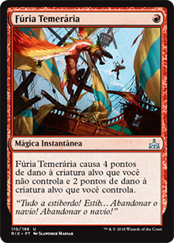
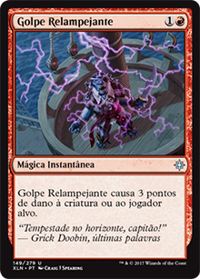
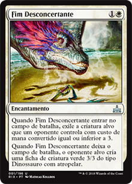
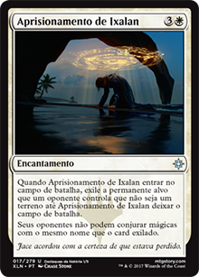
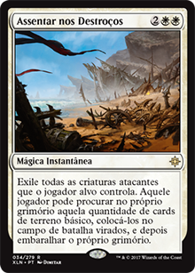
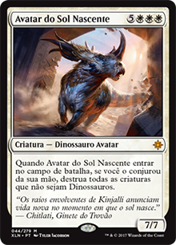
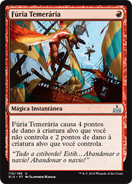
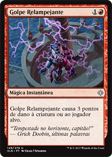
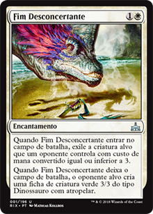
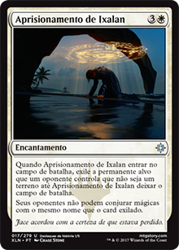
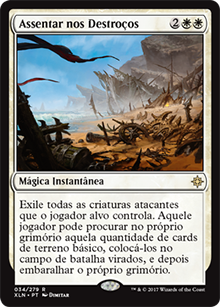
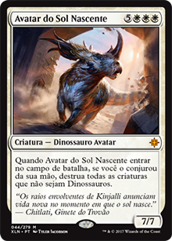
E para finalizar, todos os decks tem cards de remoção, Standard e Commander não são diferentes. Dar o Bote e Pisoteamento Selvagem faz com que nossos dinossauros lutem contra criaturas adversárias e ainda podem ativar o efeito de enfurecer, assim como o Fúria Temerária. Golpe Relampejante é bom para remover pequenas criaturas e planeswalkers, Fim Desconcertante e Aprisionamento de Ixalan são bastante fortes, eles exilam criaturas até deixarem o jogo. Aprisionamento de Ixalan além de exilar criaturas e permanentes, pode também exilar o comandante e fazer com que seus oponentes deixem de jogá-lo enquanto ele não for destruído. Assentar os Destroços é uma armadilha MUITO BOA e pode salvar seu jogo diversas vezes. E finalmente, o Avatar do Sol Nascente é um ótimo carde de remoção no final do jogo, limpando a mesa e deixando apenas dinossauros vivos.
E vocês pessoal, o que acharam sobre esse novo formato? Agora é hora de testar de diversas maneiras este semi-novo formato, parece bem divertido e promissor. Espero que tenham gostado desse artigo.
Se divirtam!
a.